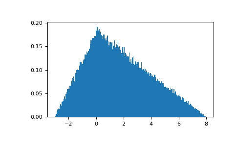

numpy.random.Generator.triangular¶
method
-
Generator.triangular(left, mode, right, size=None)¶ Draw samples from the triangular distribution over the interval
[left, right].The triangular distribution is a continuous probability distribution with lower limit left, peak at mode, and upper limit right. Unlike the other distributions, these parameters directly define the shape of the pdf.
- Parameters
- leftfloat or array_like of floats
Lower limit.
- modefloat or array_like of floats
The value where the peak of the distribution occurs. The value must fulfill the condition
left <= mode <= right.- rightfloat or array_like of floats
Upper limit, must be larger than left.
- sizeint or tuple of ints, optional
Output shape. If the given shape is, e.g.,
(m, n, k), thenm * n * ksamples are drawn. If size isNone(default), a single value is returned ifleft,mode, andrightare all scalars. Otherwise,np.broadcast(left, mode, right).sizesamples are drawn.
- Returns
- outndarray or scalar
Drawn samples from the parameterized triangular distribution.
Notes
The probability density function for the triangular distribution is
The triangular distribution is often used in ill-defined problems where the underlying distribution is not known, but some knowledge of the limits and mode exists. Often it is used in simulations.
References
- 1
Wikipedia, “Triangular distribution” https://en.wikipedia.org/wiki/Triangular_distribution
Examples
Draw values from the distribution and plot the histogram:
>>> import matplotlib.pyplot as plt >>> h = plt.hist(np.random.default_rng().triangular(-3, 0, 8, 100000), bins=200, ... density=True) >>> plt.show()
